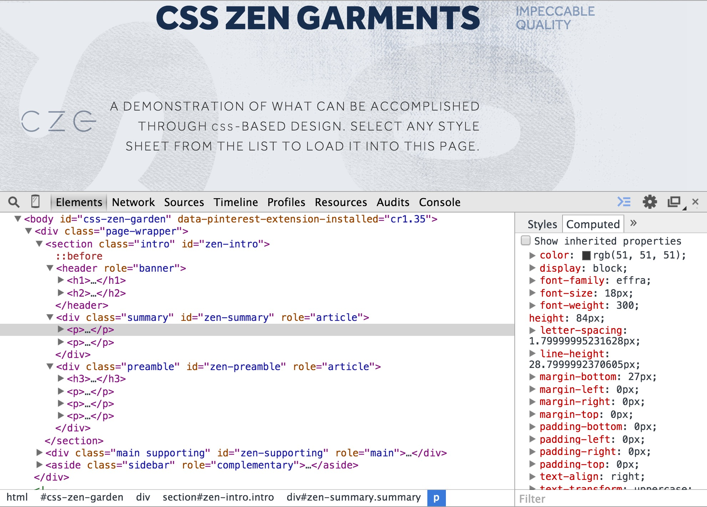

Dec 21, 2014
One core tenent of responsible web development is the separation of content/markup from style/presentation. All of the HTML is stored in one document, and all of the styles are in another. Now that we have separated our markup from the styles, however, we need a way for our stylesheet to know what styles go where.

Dec 14, 2014
The fireside video Kitchen versus Table is something that I wish I had seen prior to joining Dev Bootcamp, because I feel that it gives a much more accurate perspective of the demands of the program. After watching the video, I have a better understanding of how that came to be, and feel that I am more prepared now for future units.

Dec 14, 2014
Git is a version control system that monitors files for changes, records specific changes in those files, and saves a version record of those changes, who committed them, and when. These commits form a log that can be reviewed as well as a snapshot of all the files at that time, which can be reverted to should any conflicts or errors come up in future versions.